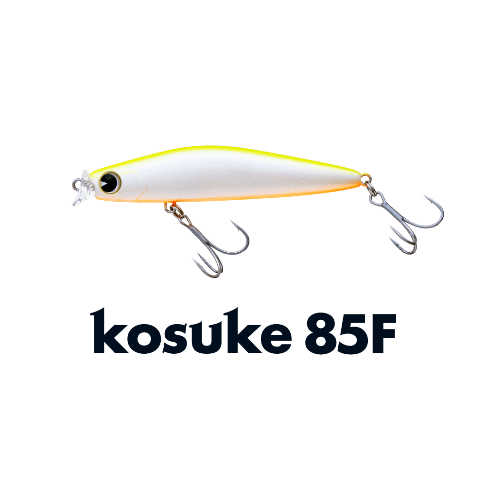
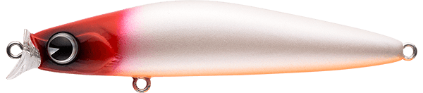
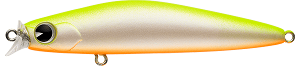
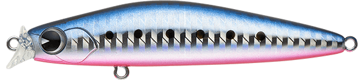
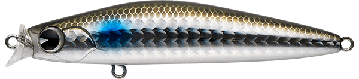
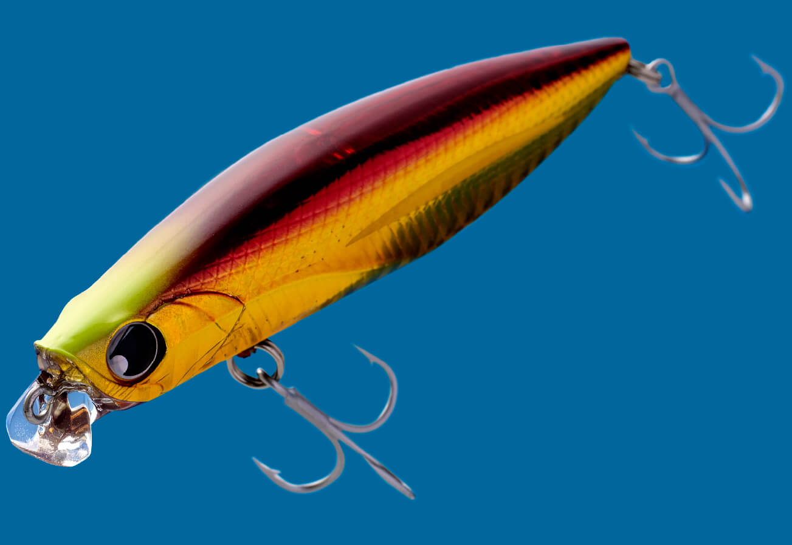

コスケ85F
（kosuke 85F）
コスケ85Fはima（アイマ）のフローティングミノーです。
コスケ110Fの基本性能を受け継ぎ、小型プラグの弱点をなくしたモデル。85mmとは思えない飛距離で、港湾や小場所はもちろん、本来は小型プラグの出番が少ないオープンエリアや外洋まで使えます。大型の#4フックを載せた、ランカーにも対応する万能スモールミノーです。

画像出典:ima公式HP
スペック
- メーカー
- ima（アイマ）
- タイプ
- フローティング
- 全長
- 85mm
- 自重
- 11.5g
- レンジ
- 30〜70cm
- フック
- #4
- リング
- #3
- アクション
- ローリング
- ターゲット
- シーバス
- 価格
- 2,200円
▼今すぐチェック

コスケ85Fの特徴
小型なのに遠投でき、大型フックでランカーも狙える万能スモールミノー
-
コスケ110Fに負けない飛距離
コスケ110Fの基本性能を受け継ぎ、85mmとは思えない飛距離を実現。小場所だけでなく、オープンエリアや外洋でも使えます。
-
大型の#4フックでランカーにも対応
小型ミノーながら#4の大型フックを搭載。ランカーシーバスが掛かっても安心して使えます。
-
レンジ30〜70cmのローリングアクション
ナチュラルなローリングで、表層の少し下（30〜70cm）を引けるミッドシャロー用。スレた状況にも合わせやすい動きです。
コスケ85Fの使い方
基本はただ巻き。ゆっくり〜普通の速度で巻くだけで、レンジ30〜70cmをローリングアクションで泳ぎます。
小型ベイトを追っているときは、明暗の境目や流れのヨレをゆっくり通すのがおすすめ。反応がなければトゥイッチを入れてヒラ打ちさせ、変化を付けてみましょう。
コスケ85Fの得意な状況
イナッコ・カタクチ・ハクなど小型ベイトが入っている港湾・河川・干潟。小さいルアーが必要だけれど飛距離も欲しいサーフや磯、スレた状況でのローテーションにも向いています。
ワンポイント
ベイトが大きくなったら同じシリーズのコスケ110F（110mm・19g）に持ち替えましょう。同じ動きのまま、シルエットだけ大きくできます。
コスケシリーズの使い分け
| モデル | 全長／自重 | 得意な場面 |
|---|---|---|
| コスケ85F | 85mm／11.5g | レンジ30〜70cm。小型ベイトや小場所、スレた状況に（本記事のモデル） |
| コスケ110F | 110mm／19g | レンジ40〜80cm。弱めのナチュラルロールの基準サイズ |
コスケは85F・110Fのほか、130F・170Fも展開しています。ベイトの大きさに合わせてサイズを選ぶのが基本です。
人気カラー
公式ラインナップから4色を紹介します（カラー名は公式の表記のまま）。

レッドヘッドパールOB定番のレッドヘッド。濁りやナイトゲームでの基準カラーに。

チャートバックパールチャートの背中で視認性が高いカラー。濁りやローライトに。

マコイワシイワシを意識したナチュラルカラー。カタクチが入ったときに。

ボラボラを意識したナチュラルカラー。イナッコパターンに。
画像出典:ima公式HP
コスケ85Fに似ているルアー
-
 コスケ110F
ima
詳細はこちら＞
コスケ110F
ima
詳細はこちら＞
全長110mm・自重19gの同シリーズ。ベイトがひと回り大きいときに。
-

ウィリップ87F ポップシークルー 詳細はこちら＞同じ80mm台のフローティングミノー。小型ベイトパターンのローテーションに。
-
 モアザン ソラリア85F
DAIWA
詳細はこちら＞
モアザン ソラリア85F
DAIWA
詳細はこちら＞
全長85mm・自重11.3gのフローティングミノー。同じサイズ感で、スローピッチなウォブンロールで見せたいときに。